Table of Contents
- Setting Up
- Adding a Track
- Inserting Values
- Editing
- Selection
- Pasting
- Selection Oerations
- Automations
- Commands
- MIDI
- More Docs
Setting Up
Before doing anything, you will need to find plugins. Open the Settings windows by going Settings -> Preferences.
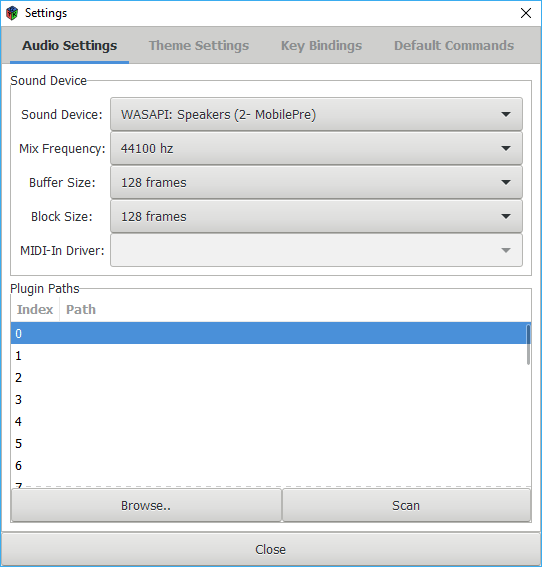Enter paths where plugins will be scanned (just click Browse to open a dialog for selecting a path). When enough paths are there, push the Scan button.
This will scan all plugins available in the folders entered. If you add or remove plugins, you will need to hit Scan again. This happens because scanning is a time consuming operation, so ZyTrax will cache the plugins found for you.
Adding a Track
Use the +New Track button to create a new track. Both the track and the corresponding rack and volume controls will appear:
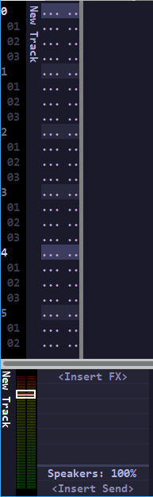By default, the track will be silent. Noise can be made by adding Effects to it. To do this, press the Insert FX label at the bottom, on the rack section. This will open a menu where you can select the scanned plugins.
The effect added should now appear on the rack. Make sure to select a synth, or else no sound generation will happen.
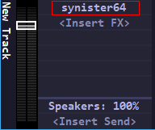Inserting Values
Make sure to focus on the Pattern Editor. Either click on it (the column full of dots on the left), or press F2, which will automatically focus on it (remember this key binding for future use, it's very handy!)
The first thing that you will notice is that the cursor can move around as if it was in a text document. Horizontally, for a pattern track, the cursor can move within different fields. Each field is as follows:
Note Field
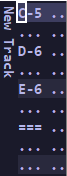The note field is used for entering notes. When the cursor is in this field, your PC keyboard becomes a two-octave musical keyboard with lots of useful functions:
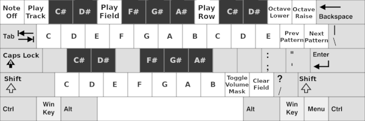Most keys become a virtual piano you can use to enter notes (And note-off: "==="). After a while entering your input with the keyboard, you will be surprised of how productive you have become.
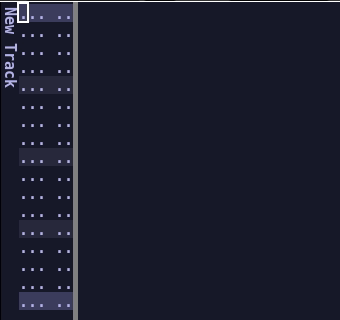Octave Field
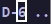This fields only allows entering the octave as a number.
Volume Field
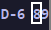Finally, the volume field. When unentered, volume is assumed to be the maximum volume (99). Volumes from 00 to 99 can be input for each note.
Volumes can also be input without a note (which will send MIDI note pressure to plugins that support it), and into Note Off events, for synthesizers that support note off velocity.
Editing
Together with field input are three keys designed to make input easier:
Insert/Delete
Pressing the Insert or Delete keys will literally insert or delete rows below the cursor. These are very handy when you want to move notes around after they were inserted:
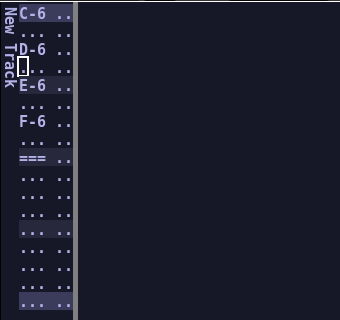Field Clear
The Field Clear key will move the cursor down while clearing anything on the way. It's useful to just erase notes: 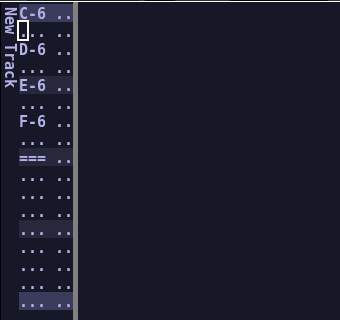When positioned in the volume field, it will just clear the volume.
Navigating
So far everything has been shown with a single track (that has only one column), but reality is that songs can quickly grow to have multiple columns and tracks. For this, some useful keybindings exist:
Tabbing
Using Tab and Shift-Tab will allow to quickly cycle between columns, skipping the fields entirely. This is the most common way of moving around horizontally:
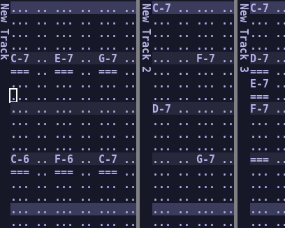Page Up/Down
To move up and down by a bar, use the Page Up and Page Down keys. This helps a lot when navigating long patterns.
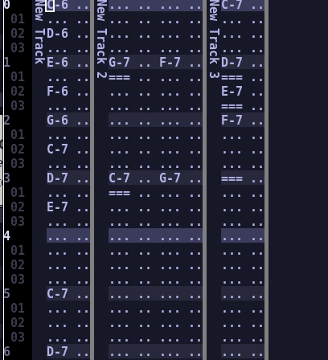Home/End
The Home and End keys are vital for navigation. They move to the next and previous boundaries.
When pressing Home, if the cursor is currently in a field, it will move to the beginning of the column. If already there, it will move to the beginning of the track.
If the cursor is already at the beginning of the track, it will move to the beginning of the first track and, from there, to the first row:
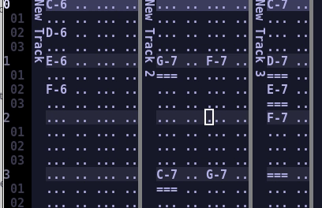The End key does similarly in the opposite direction, going to the next column, the last column and the the last row.
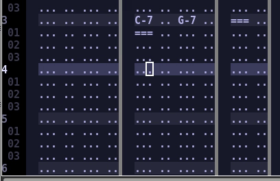Selection
Part of what makes keyboard-based input so efficient is being able to precisely manage selected regions and interact with them.
ZyTrax has many ways to create a selection. Dragging with the mouse across the fields works, as well as using shift-cursors.
Block Begin/End
Most of the time, however, the most efficient way is to use the block selection keybindings. The basic ones are Alt-B for Block Begin and Alt-E for Block End.
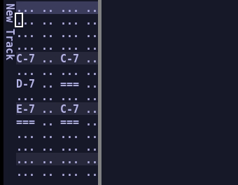Select Column/Track/All
It is possible to alternate the selection between the current column, track and entire song by pressing Alt-L repeatedly.
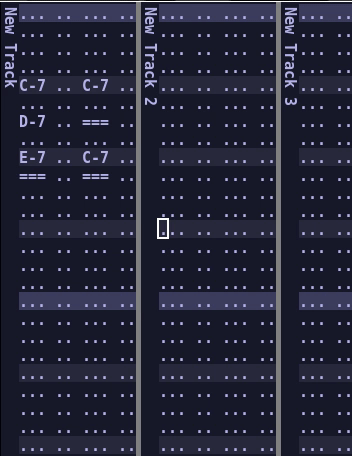Combining this keybinding with the previously mentioned block selection keys allows to quickly produce complex selections with a few keypresses.
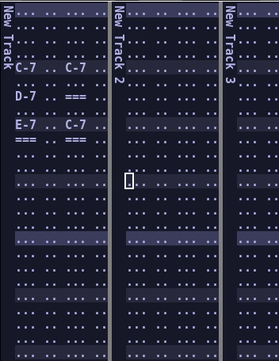To get rid of the selection, simply press Alt-U.
Clipboard
Once the selection is laid out properly, many useful clipboard operations are provided. Press Alt-C to copy the selection to the clipboard, or Alt-Z to cut it (zap and copy).
Pasting
There are three different paste modes, depending on what you want to do:
- Paste-Overwrite: Alt-O.
- Paste-Insert: Alt-P.
- Paste-Mix: Alt-M.
Paste Overwrite
It simply pastes starting from the cursor, replacing the contents of the events with the contents of the selection.
Paste Insert
It pastes, but pushes the events in the columns being pasted downwards. This is very useful when you want to do repeating "patterns" like beats, or anything that repeats.
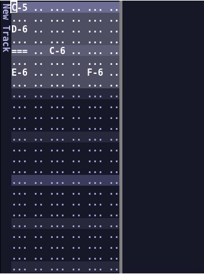Paste Mix
Works similar to overwrite but does not erase the previous contents. In fact, if there is any content it will be respected.
Selection Operations
Once a selection block is laid out, it is possible to do a number of useful operations on it. Check the Selection menu on top, and make sure to learn the many shortcuts, as they are very useful:
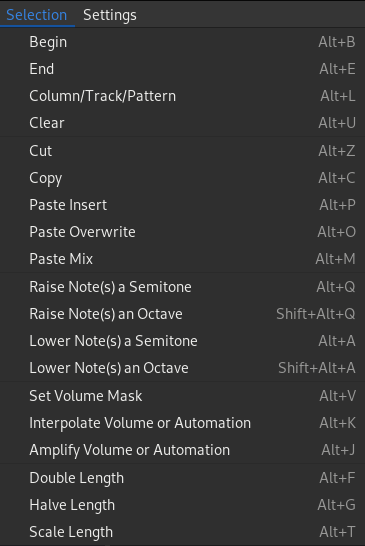Automations
Plugin effects will usually provide a list of automatable parameters. They appear as checkboxes on the left side of the window:
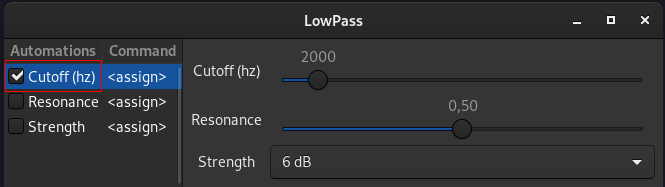Enabling one of those checkboxes will automatically make an automation column appear:
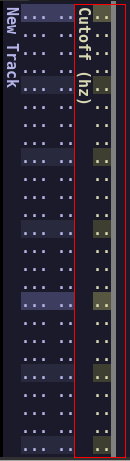Numbers can be written from 0 to 99 to control the exposed parameters, these numbers are discrete, which means that the value changes only when a new value is found, and effect takes place immediately. You can interpolate them with the Alt-K effect if you wish (still discrete, but you can make a nice ramp).
Sometimes it may be desired to have more fine-grained control of the exposed parameter over time. This is possible by modifying the visualization mode. Simply right-click over the automation column and this menu will appear:
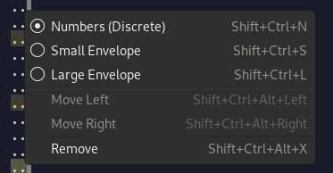Selecting the envelope views, the automation can be edited visually over time (and this time, it does interpolate the values):
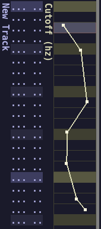Commands
Commands are an alternative way to modify plugin effect parameters. Instead of ticking the automation box, just select a letter in the parameter list:
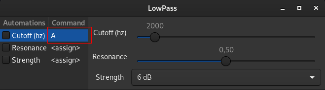Immediately, nothing will happen in the pattern view. Right click over the note columns in a pattern to open the settings: of that track:
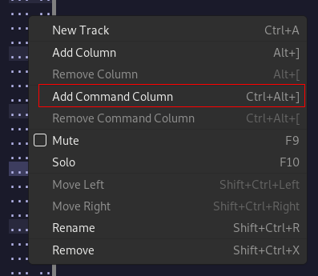This will make a command column appear. These columns are different from note columns, as they take a letter and a value (00-99 as always).
In there, just use the same leter you assigned in the effect to control the parameter. This allows controlling a large amount of parameters from a single column:
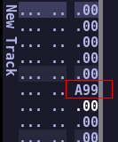As this doing this all the time for all effects can be tedious, it is possible to make this letter the default for this specific effect, so next time you instantiate it it will remember it. To do this, just right click over the parameter name:
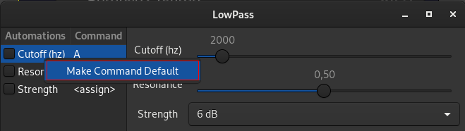If you want to edit this (or remove it), you can find all these assignments in the settings window:
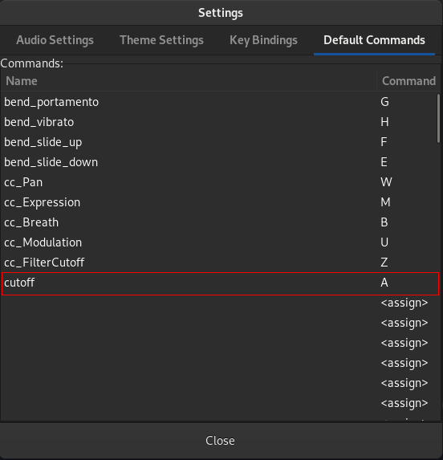MIDI
ZyTrax supports MIDI-In. The usage is very limited though, as it will only play notes from the track selected (the track is selected automatically when you open an effect Window). This can allow you to try out ideas, patches and notes on the plugin window or pattern editor.
More docs
If you feel documentation is missing, or you would like to request a better description on some topic, feel free to open an issue at the GitHub issue tracker